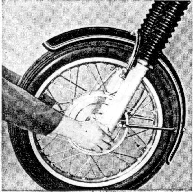
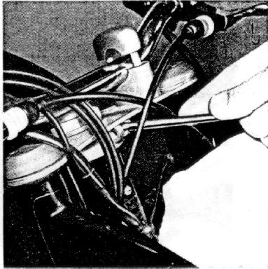
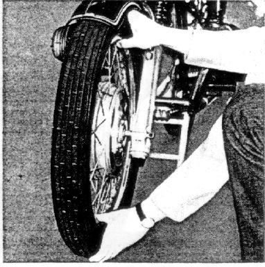

Check the steering head play after the first 1000 miles.
To do this, put motorcycle on center stand, hold on to both fork legs
from the front and check for play by alternately pushing and pulling.
No free motion must be noticeable --
otherwise readjust the steering head bearings.
Figure 32
32

To do this, remove the steering damper knob,
also the upper cap and lock washer.
Dismount head light but do not disconnect, let it hang down
but protect it and the fender with rags.
Remove the right handlebar clamp by removing the two hex nuts
(wrench size 13); loosen left handlebar clamp.
Remove clamp bolt from clamp ring (allen wrench size 6).
Loosen centering nut (wrench size 36) with box wrench (from tool kit).
The steering-head play can now be adjusted.
Push the pin (from tool kit) through the opening of the clamp ring
into one of the holes of the split nut and turn clockwise to tighten
and counter-clockwise to loosen.
Figure 33
33

Reassemble in reverse order.
Caution!
Tighten clamp ring first,
then tighten centering nut with approximately 87 lb/ft.
Recheck play; if properly adjusted,
the fork will fall to its left or right end position by its own weight.
To make certain that the
wheel bearings have no play,
check every 3000 miles for axial play with the motorcycle on the center stand
and the wheel off the ground.
No play must be noticeable.
Figure 34
34

The wheel bearing should be greased and adjusted every 6000 miles.
This can be done only by your authorized BMW dealer.
He has the right tools and training to do this properly.
Every 12000 miles,
check whether the wheel hubs are packed sufficiently with grease.
Check under
Technical Data
for the proper grease.
Also this work should only be made by an authorized BMW workshop.